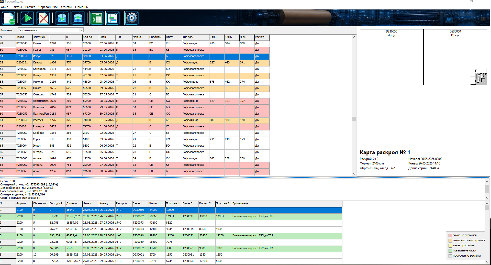
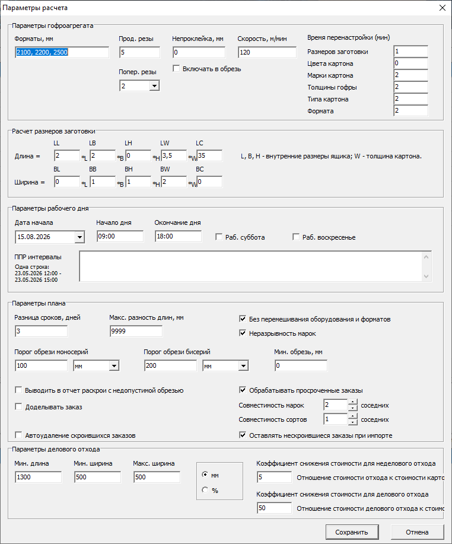
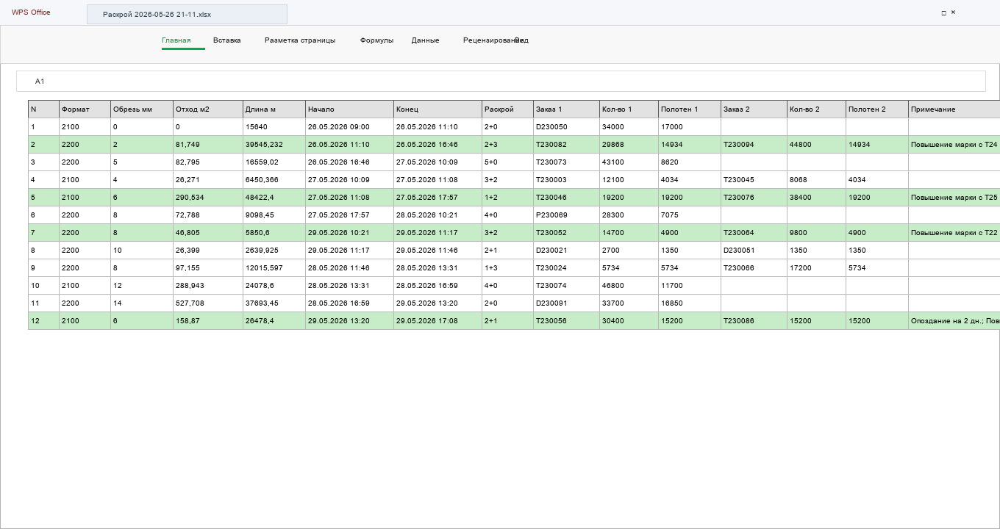
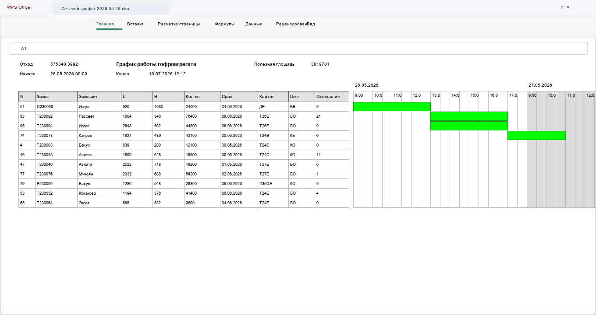
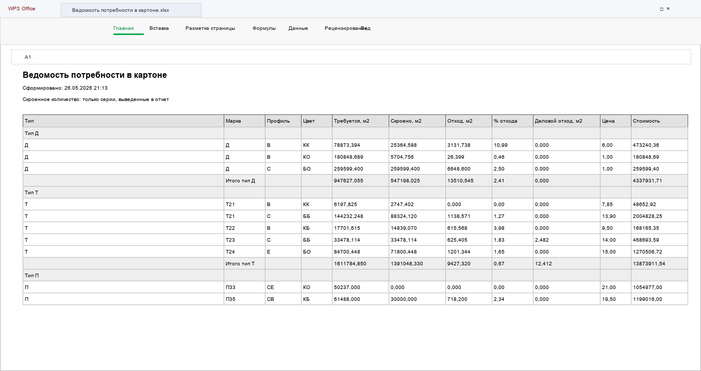
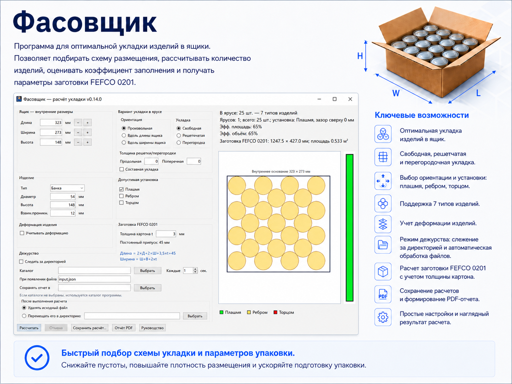
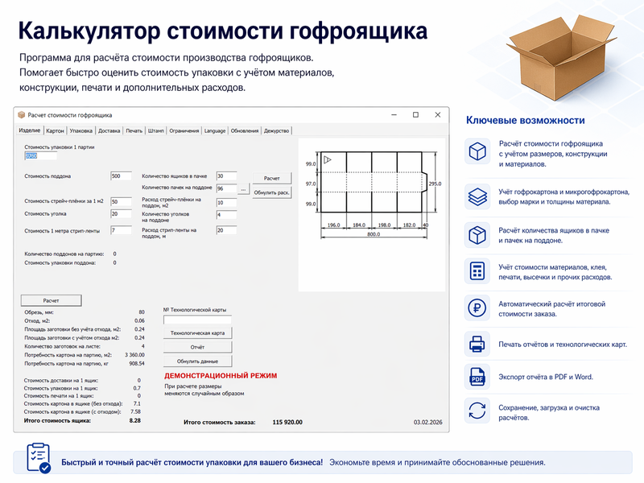
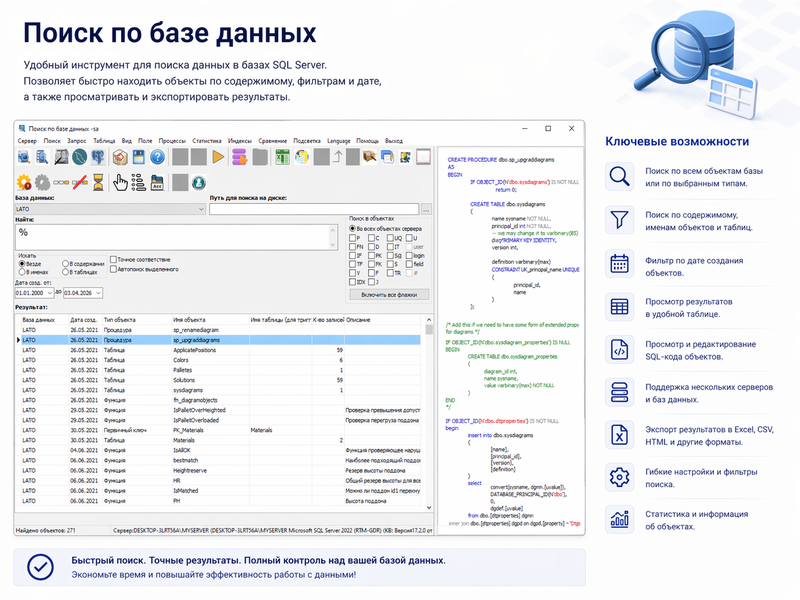

Полный контроль обрези
Добавлены минимальная обрезь и настройка учета непроклейки. Неподходящие раскрои получают штраф, а при отключенном ограничении подсвечиваются красным.
Оптимизация раскроя полотна гофрокартона: заказы, сроки, ППР, подкрой, совместимость марок, карты раскроя, сравнение фактического плана и Excel/Word-отчеты в одном рабочем инструменте.
На гофроагрегате важно не только уменьшить обрезь, но и получить план, который реально можно выполнить по срокам, сменам и ремонтным окнам. OptCutting строит раскрой с учетом производственных ограничений, а результат показывает понятной картой и отчетами.
Сравнение моносерий и совместных раскроев, учет подкроя и пороговой обрези.
Расчет от даты начала, рабочий календарь, выходные, ППР и опоздания в примечаниях.
Цены по маркам, повышение марки, деловой отход и ведомость потребности.

Белые заготовки на цветном картоне, обрезь, пиктограмма слоя, цвет и профиль.
Расчет заготовки по внутренним размерам ящика и биговочные линии на карте.
Повышение марки оценивается через метод эквивалентной обрези.
Рабочая версия хранит данные в SQL Server, импортирует заказы и фактические планы из Excel.
Форматы полотна, продольные и поперечные резы, скорость, перенастройки, рабочий день, субботы/воскресенья, интервалы ППР, пороги обрези и правила обработки просроченных заказов.
Импортируйте или создайте заказы, выберите заказчика и тип заготовки.
Задайте форматы, резы, скорость и время перенастройки.
Укажите дату старта, рабочее время, выходные и интервалы ППР.
Получите план раскроя, карту, сводку, Excel-отчеты и сравнение с фактом.

Рабочая версия может загрузить реальный план производства из Excel, посчитать его показатели и сразу сравнить с оптимизированным вариантом OptCutting.
Файл содержит листы «Раскрой», «Заказы» и «Параметры». Формат раскроя совпадает с отчетом программы, а коды заказов берутся из листа заказов.
После загрузки видны серии, отход, процент отхода, деловой отход, полезная площадь, длина, опоздания и раскрои выше порога.
После оптимизации программа добавляет сравнение фактического и расчетного плана в Excel и формирует отдельный Word-отчет.
Файлы Excel открываются автоматически и сохраняют цветовую подсветку: опоздания, повышение марки, частично скроенные и нескроенные заказы. Для фактического плана доступен отдельный Word-отчет сравнения.



Ключевые изменения, появившиеся после версии 1.0: точнее расчет, быстрее подготовка заказов и удобнее работа на производстве.
Добавлены минимальная обрезь и настройка учета непроклейки. Неподходящие раскрои получают штраф, а при отключенном ограничении подсвечиваются красным.
Импорт заказов вынесен на панель инструментов. Появились сортировка по заголовкам, выделение строк, мультивыбор, исключение и удаление через Ctrl и Delete.
Формат заготовки рассчитывается по внутренним размерам ящика и настраиваемым коэффициентам. Lite-версия работает без SQL Server.
Для выбранного заказа или группы заказов программа находит все допустимые по ограничениям подкрои среди остальных заказов.
Команды работы с заказами доступны по правой кнопке мыши: исключение из расчета, включение обратно, удаление и подбор подкроя.
Колесико мыши прокручивает список заказов или список раскроев, не меняя выбранный заказ.
После расчета можно автоматически удалить полностью скроившиеся заказы и уменьшить количество в частично скроившихся, если отключен вывод раскроев с обрезью выше пороговой.
Та же операция доступна вручную отдельной командой меню и кнопкой панели инструментов.
Деловой отход выделяется отдельным цветом; его насыщенность зависит от коэффициента снижения стоимости отхода.
Цена снижена для первых внедрений: программа новая, и реальные кейсы помогут быстрее довести ее до стабильной версии 1.0.
Для предприятия, которое хочет сразу закрепить право использования.
Примерно 25% от бессрочной цены, удобно для опытной эксплуатации.
Минимальный вход, чтобы проверить программу на своих заказах.
Доработки, специальные отчеты, перенос данных и интеграции оцениваются отдельно. Для первых клиентов установка и настройка могут быть включены в пилотное внедрение.
Коротко о том, как начать проверку программы на реальных задачах гофропроизводства.
OptCutting строит оптимальный раскрой заготовок гофроящиков на полотне гофрокартона с учетом отходов, сроков, ППР, подкроя и совместимости марок.
Демоверсия не требует SQL Server: она автоматически создает пример заказов. Рабочая версия подключается к базе и реальным данным предприятия.
Excel-отчет по раскроям, сетевой график в виде диаграммы Ганта, ведомость потребности в картоне и Word-отчет сравнения фактического и оптимизированного плана.
Да. Рабочая версия загружает фактический план из Excel, оценивает его показатели и после расчета показывает, что изменилось в оптимизированном варианте.
Демоверсия не требует SQL Server: она автоматически создает пример заказов и позволяет посмотреть интерфейс, карты раскроя и отчеты. Рабочая версия подключается к базе, реальным данным предприятия и фактическим планам из Excel.
Инструменты для упаковочного производства, логистики, учета лицензий и поиска по базам данных.

Оптимальная укладка изделий в ящик: схемы размещения, заполнение, FEFCO 0201 и PDF-отчет.
Страница
Расчет себестоимости гофроупаковки с учетом материалов, печати и дополнительных расходов.
Страница
Поиск объектов и данных в SQL Server, просмотр кода, фильтры и экспорт результатов.
Страница
Учет лицензий, контроль сроков действия, ответственные, уведомления и экспорт в Excel.
Страница

Оптимальное распределение листовых материалов по поддонам: импорт заявок из Excel, расчет поддонов, контроль размеров, веса, высоты и цвета.
Страница

Расчет характеристик гофроящика, подбор марки гофрокартона и PDF-отчет.
Страница